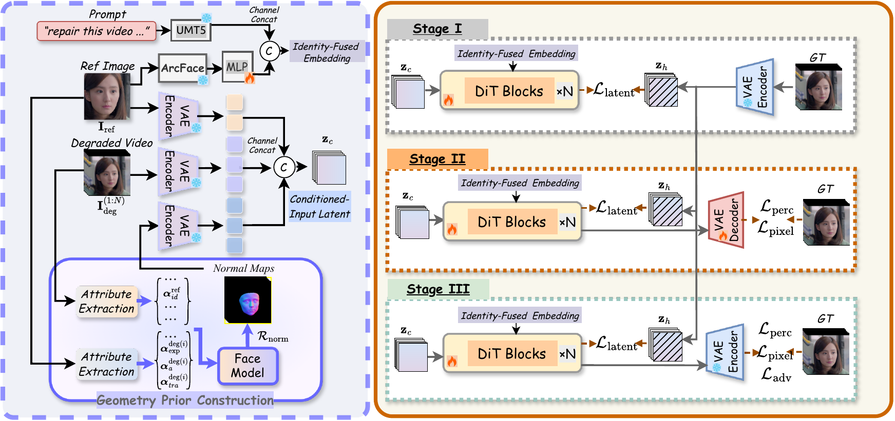
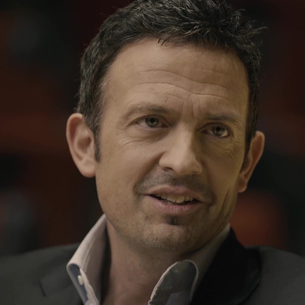
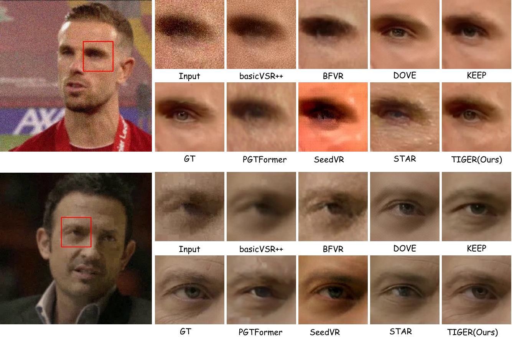

Identity Prior
Reference identity embeddings are injected into the latent backbone to anchor subject-discriminative facial traits under severe degradation.
ECCV 2026
Taming Identity, Geometry, and Generative Priors for High-Quality Face Video Restoration
1 MiLM Plus, Xiaomi Inc. 2 The Hong Kong University of Science and Technology (Guangzhou)
* Equal contribution † Corresponding author
Face Video Restoration (FVR) aims to recover high-fidelity facial videos from degraded input while preserving identity and semantic consistency across frames. Existing methods often struggle to simultaneously address identity shift, viewpoint-entangled guidance, and perceptual realism.
We propose TIGER, a structured tri-prior fusion framework that tames Identity, Geometry, and gEnerative pRiors for high-quality FVR. TIGER anchors identity with subject-discriminative embeddings, lifts reference cues into a disentangled 3D geometry prior, and harnesses a video generative prior through one-step rectified flow.
A progressive three-stage training strategy refines structural fidelity, textural reconstruction, and distribution-level realism. Extensive experiments demonstrate state-of-the-art identity fidelity and temporal stability with efficient, identity-consistent face video restoration.
A tri-prior framework for identity-consistent, geometry-aware, and realistic restoration.
Reference identity embeddings are injected into the latent backbone to anchor subject-discriminative facial traits under severe degradation.
2D reference cues are lifted into a 3D parameter space and fused with frame motion to provide temporally consistent structure.
A one-step rectified-flow formulation transports degraded latents to the high-fidelity manifold while preserving photorealistic detail.

Paired degraded inputs, restored outputs, and identity references from VFHQ and VOX2.
Reference
Degraded Input
TIGER Restoration

Reference
Degraded Input
TIGER Restoration
Reference
Degraded Input
TIGER Restoration
Reference
Degraded Input
TIGER Restoration
Additional comparisons from the paper.

@inproceedings{zhou2026tiger,
title={TIGER: Taming Identity, Geometry, and Generative Priors for High-Quality Face Video Restoration},
author={Yang Zhou and Wenxue Li and Peng Zhang and Yifei Chen and Fei Wang and Daiguo Zhou},
booktitle={European Conference on Computer Vision},
year={2026}
}